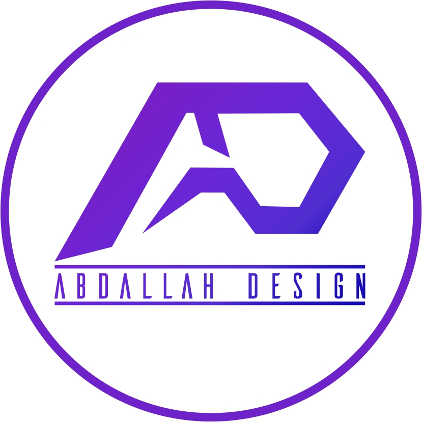

El target de nuestra empresa va dirigido mas que nada a jóvenes o adultos (no pasable a hombres y mujeres, ya que esta empresa sirve para crear logos, ya sea de una empresa Por ejemplo: si estas tan apurado por conseguir unas invitaciones de unos XV años y no podemos ayudarte a diseñar la invitación y imprimirla para ti.

.
Tambien si quieres crear un logo para tu empresa nosotros podemos ayudarte a hacerla, podemos ayudarte a mejorarla, imprimirla, ya sea en lonas, hacerle publicidad. Podemos ayudarte a hacer lo que tu quieras digitalmente.
Es fundamental conocer el perfil de usuario de nuestro cliente, es decir Qué redes socia medios? ¿Cuál es su frecuencia de navegación? ¿Por que palabras clave busca el produc ofrecemos? Resolver estas preguntas es muy importante sobre todo para la hora de realiz online o simplemente para mejorar nuestro posicionamiento a nivel SEO con respecto a le Así que depende a las respuesta que vaya a poner podemos hacer paginas web como en lleguen a buscar en Google.
Vision
Innovaciones a través de nuevos y minimalistas logos, la captura inteligente de la información y comunicaciones integradas que conectan al cliente con su empresa,de esta manera crear un logo sencillo e inteligente que muestre lo que la empresa es y será. Tambien queremos proyectar la mejor publicidad y marketing para dar la mejor experiencia tanto como a los clientes como a los lideres de la empresa.
Mision
Destinar su talento y tecnologia a crear productos y servicios de gran calidad que contribuyan a mejorar la sociedad global.
Valores
Uno de los valores principales de nuestra empresa es la responsabilidad, ya que entregar a tiempo nuestros encargos es de mucha importancia para el cliente como para la empresa, al igual que asumir las consecuencias de nuestros actos.
El respeto es uno de los valores importantes ya que es uno de los factores que genera confianza al interactuar con los
clientes, así como aceptar las diferencias y opiniones del otro La honestidad ayuda a que en nuestra empresa refleje confianza y seguridad, asegurándonos que el cliente se sienta libre de expresar sus opiniones y como se siente al respecto con el trabajo realizado.